极点极线是高等几何（射影几何）中的内容，并不在高考大纲范围内。你可以在小题（选择填空题）中使用极点极线的结论来达到“秒杀”的效果，但切记不要在大题中直接写结论，你敢写，他敢扣，最后吃亏的还是自己。
如果你想看查看极点极线及其相关证明，请全部看完；而如果你只想看结论，你可以忽略掉调和点列、交比以及完全四边形的内容
调和点列
在极点极线之前，我们要了解调和点列
定义
线段 AB 的外分点 P 与内分点 Q，满足BPAP=BQAQ，则称 P, Q 调和分割线段 AB， P、A、Q、B 构成调和点列
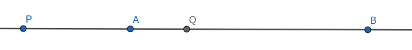
P、Q 与 A、B 称为调和共轭
性质1
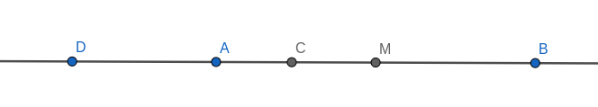
对于 A,B 的内分点 C 和外分点D 满足 C,D 调和分割线段 AB，M 是 AB 的中点，则有以下结论成立：
- 点 A, B 调和分割线段 CD
- AD1+BD1=CD2 (外分点到线段两端距离的调和平均数等于内外分点的长度)
- AB×CD=2AD×BC (交叉等于相离的两倍)
- CA×CB=CM×CD
证明
对于结论1，由定义可知
BDAD⇔DACA=BCAC=DBCB
所以，A, B 调和分割线段 CD
对于结论2，若等式成立，则有
AD×CD+BD×CDAD2+AD×AC+BD×ACAD×(AD+AC+BC)AD×BD=2AD×BD=AD×BD=AD×BD=AD×BD
所以等式成立，即
AD1+BD1=CD2
对于结论3，若等式成立，则有
AB×CD(AC+BC)×(AD+AC)AC×AD+AC2+AC×BD+BC×ACAC(AD+AC+BD+BC)2AC×BD=2AD×BC=2AC×BD=2AC×BD=2AC×BD=2AC×BD
所以等式成立，即
AB×CD=2AD×BC
对于结论3，若等式成立，则有
AC×BCAC(BC+CD)2AC×BD=CM×CD=(AC+CM)×CD=AB×CD
由结论2可得，等式成立，即
CA×CB=CM×CD
性质2
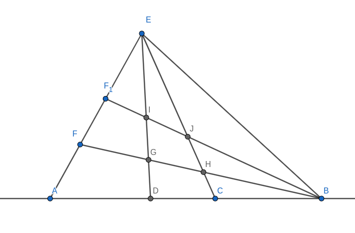
由完全四边形的性质（下方有证明）可知，当 A、D、C、B 构成调和点列时，F、G、H、B 一定也构成调和点列
性质3
对于直线上的4点 A、B、C、D 把各有向线段的量之间的比值称为这4点的交比，记为 (AB,CD) 。交比为1或-1的4个点组成调和点列，记为调和点列 [A,B;C,D]。
交比
说完了调和点列，来谈谈交比吧
这里只讲平面几何中交比的部分性质，如果你感兴趣可以查看英文维基百科上的 Cross-ratio
定义
欧几里得几何中，共线的四点的交比是
(A,B;C,D)=BC⋅ADAC⋅BD
要注意这里是有向线段
性质
共线的四点 A、B、C、D 的也可以写作
(A,B;C,D)=CBAC:DBAD
where CBAC describes the ratio with which the point C divides the line segment AB, and DBAD describes the ratio with which the point D divides that same line segment. The cross ratio then appears as a ratio of ratios, describing how the two points C, D are situated with respect to the line segment AB. As long as the points A, B, C and D are distinct, the cross ratio (A,B;C,D) will be a non-zero real number. We can easily deduce that
- (A,B;C,D)<0 if and only if one of the points C, D lies between the points A, B and the other does not
- (A,B;C,D)=(A,B;D,C)1
- (A,B;C,D)=(C,D;A,B)
- (A,B;C,D)=(A,B;C,E)↔D=E
~已经凌晨一点了，不想翻译了~
六个交比
四个点可以有 4!=4×3×2×1=24 中排列方式，但只有六种方式把他们分成无序对。因此，四个点只有六中不同的交比，他们的关系如下：
(A,B;C,D)=(B,A;D,C)=(C,D;A,B)=(D,C;B,A)=λ(A,B;D,C)=(B,A;C,D)=(C,D;B,A)=(D,C;A,B)=λ1(A,C;B,D)=(B,D;A,C)=(C,A;D,B)=(D,B;C,A)=1−λ(A,C;D,B)=(B,D;C,A)=(C,A;B,D)=(D,B;A,C)=1−λ1(A,D;B,C)=(B,C;A,D)=(C,B;D,A)=(D,A;C,B)=λλ−1(A,D;C,B)=(B,C;D,A)=(C,B;A,D)=(D,A;B,C)=λ−1λ.
维基百科上抄的结论，还是比较好理解的
射影几何
在射影几何中，交比是由射影变换所保留的不变量。
特别的，如果四点在一条直线上，则他们的交比为定值，因为任何原点甚至直线上的比例选择都会产生相同的交比
此外，使一直线交过定点 Q 的四条不同的直线于四个点，则这四点按照相同顺序获取的交比 (A,B;C,D) 是一个定值
完全四边形
为了方便证明，我们再来了解一下完全四边形的性质
完全四边形是欧几里德平面上由任意四条直线组成的图形，它们其中任意三条都不共点，且相交于六个点。
相应地，由四个三三不共线的点加上它们之间的六条连线所构成的图形则称为完全四点形。
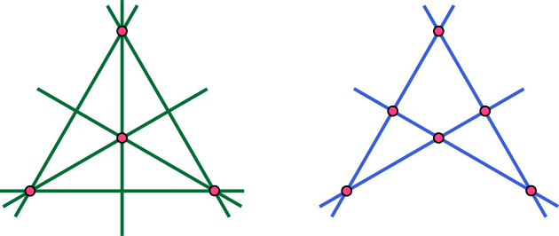
性质
完全四边形的一条对角线与其他两条对角线的交点，调和地分开这条对角线的顶点。

如图，直线 AE、BE、AF、BI 构成一个完全四边形，直线 AF、BI 为对角线。记 A、B、C、D 的交比为 (ABCD)，则 (ABCD)=−1，证明如下：
根据交比的不变性，由 E 点的投影，有
x=(ABCD)=(IFHD)
由 G 点的投影，有
(IFHD)=(BACD)
根据上文定义，有
(BACD)=(ABCD)1=x1
所以有
x=x1
由于 A、B、C、D 的相对位置，x<0，故(ABCD)=x=−1
证毕。
切线与切点弦
在极线前，我们还需要了解切线和切点弦
切线方程
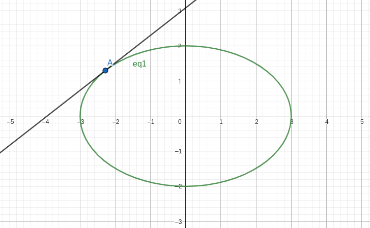
对于 mx2+ny2=0 上一点 A(x0,y0)，全微分可得
mxdx+nydy=0
代入点的坐标可得
mx0dx+ny0dy=0
积分得
∫mx0dx+∫ny0dymx0x+ny0y=C=C
代入点的坐标可得
C=mx02+ny02=1
所以得切线方程
mx0x+ny0y=1
对于抛物线 y2=2px 上一点 A(x0,y0)，全微分可得
ydy=pdx
代入点的坐标可得
y0dy=pdx
积分得
∫y0dyy0y=∫pdx+C=px+C
代入点的坐标可得
y02CC=px0+C=2px0−px0=px0
所以切线方程为
y0y=p(x0+x)
而对于一般方程 Ax2+By2+Cx+Dy+E=0，全微分得
2Axdx+2Bydy+Cdx+Ddy=0
代入点的坐标可得
2Ax0dx+2By0dy+Cdx+Ddy=0
积分得
∫2Ax0dx+∫2By0dy+∫Cdx+∫Ddy+2C1Ax0x+By0y+2Cx+2Dy+C1=0=0
代入点的坐标可得
Ax02+By02+2Cx0+2Dy0+C1C1=0=2Cx0+2Dy0+E
所以切线方程为
Ax0x+By0y+C2x+x0+D2y+y0+E=0
切点弦方程
我们先设切线方程的左式为一个函数
F(x,y,x0,y0)=Ax0x+By0y+C2x+x0+D2y+y0+E
显然函数是对称的，即
F(x,y,x0,y0)=F(x0,y0,x,y)
过圆锥曲线外一点 P(x0,y0) 作两条切线，交曲线于 A(x1,y1)、B(x2,y2) ，由 P 在切线上可知
F(x0,y0,x1,y1)=0F(x0,y0,x2,y2)=0
由于 F(x,y,x0,y0)=0 是对称的，所以有
F(x1,y1,x0,y0)=0F(x2,y2,x0,y0)=0
可以看到，(x1,y1)、(x2,y2) 均为方程的根，即 A、B 在 F(x,y,x0,y0)=0 这条直线上，所以切点弦方程为
F(x,y,x0,y0)=0
可见切点弦方程在形式上与切线方程一致。为了方便记忆这些方程，我们引入“半代法”
半代法
半代法，顾名思义就是把点的坐标 (x0,y0) 代入到方程的一半得到切线方程
如方程 x2+y2+x+y+1=0，我们把二次项 x2 替换为 x0x，y2 替换为 y0y，把一次项 x 替换为 2x0+x，y 替换为 2y0+y，则切线方程为
x0x+y0y+2x0+x+2y0+y+1=0
有了这个方法，我们可以求出所有二次曲线上的切线方程。因为切点弦方程与切线方程在形式上保持一致，所以我们也可以使用此方法求出切点弦方程
极线
定义
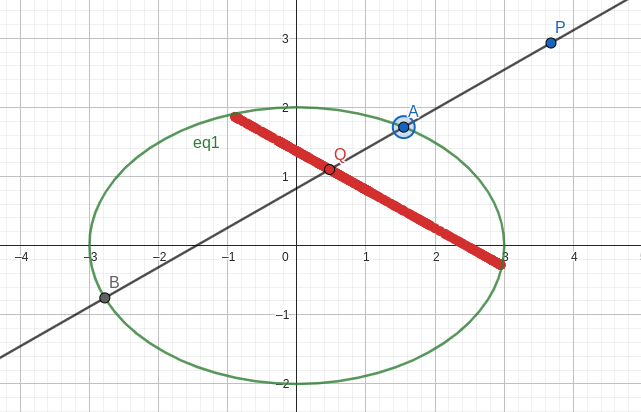
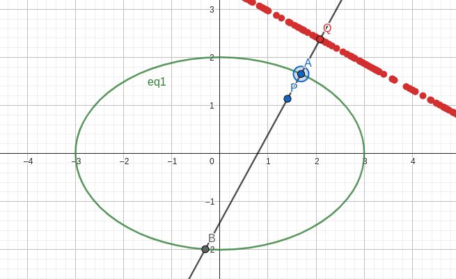
如图所示过平面上定点 P 的直线 l 交圆锥曲线于 A、B 两点，存在 Q 点，使得 P、A、Q、B 构成调和点列。由几何画板我们可以发现，Q的轨迹是一条直线，我们称这条直线为极点 P 对圆锥曲线的极线。
Q 点轨迹的几何证明十分简单（完全四边形），但代数证明比较麻烦，如果你对极线的代数证明感兴趣，可以在网络上探索极点极线的代数证明
虽然极点在圆锥曲线上的极线没有意义（无法构成调和点列），但由于极线在形式上与切线方程相同，所以规定极点在圆锥曲线上时其对应的极线为过极点的切线方程
作图与证明
我们以椭圆举例
极点在椭圆外
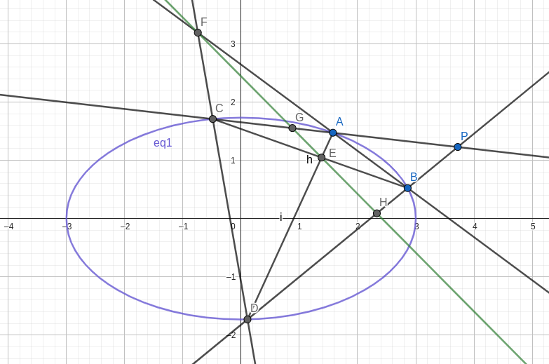
我们取椭圆外一点 P ，做直线 l1、l2 交双曲线于 A、C，B、D 四点，直线 AD、CB 和直线 AB、CD 分别交于 EF 两点，则直线 EF 就是要作的极线
证明
注意到直线 AB、CD、AC、BD 构成一个完全四边形 ABCD
我们设 PC、PD 分别交 EF 于 G、H，由完全四边形的性质可得直线 DB 调和分割线段 HP，直线 CA 调和分割线段 GP
由极线的定义可知，G、H 在极点 P 对应的极线上
又 E、F 在直线 G、H 上，即直线 EF 就是极点 P 对应的极线
方程
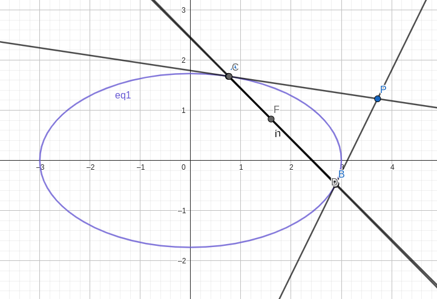
我们可以使 AC、BD 无限逼近0，此时有 PA、PB 是 P 点引椭圆的两条切线，切点弦也就是极线：
F(x,y,x0,y0)=0
极点在椭圆上
过 P 点的切线即为 P 所对应的极线
此时，P、E、F 三点重合，我们可以认为当前的直线 EF 为过 P 关于椭圆的切线
方程
由切线方程得极线方程
F(x,y,x0,y0)=0
极点在椭圆内
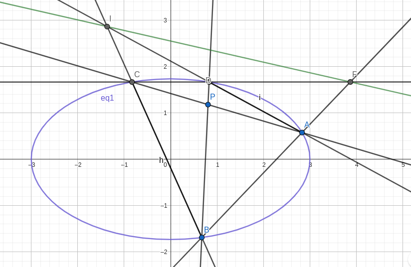
过 P 作两条直线与椭圆交于 A、B、C、D 四点，作直线 AB、CD 交于 F，直线 AD、BC 交于 I
则直线 FI 即为 P 对应的极线
证明
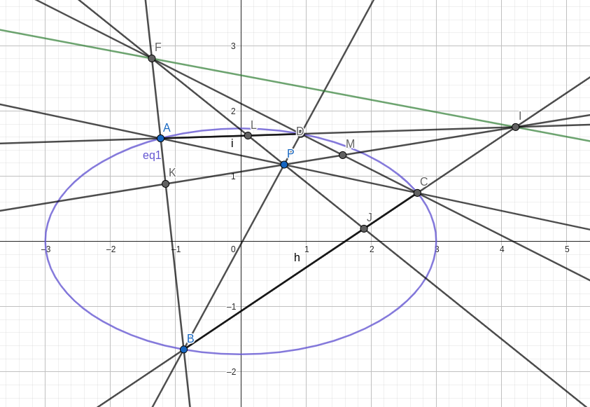
作直线 FP、IP 分别交 BC、AB、AD、CD 于 J、K、L、M 两点
注意到直线 AD、AB、CB、CD 构成一个完全四边形，由完全四边形的性质，我们得到 J、L、P、F 和 K、M、P、I 各构成调和点列
所以点 F、I 在极线上，直线 FI 即为 P 对应的极线
方程
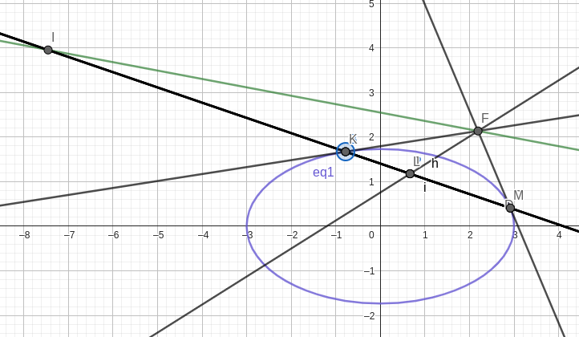
当 AB，CD 无限逼近0时，FA、FC 为切线，则有
F(x0,y0,xF,yF)⇔F(xF,yF,x0,y0)=0=0
即 F 点在方程 F(x,y,x0,y0)=0 所在的直线上
所以 P 点对应极线方程为
F(x,y,x0,y0)=0
应用
极点极线可以快速求出动点所在直线的方程，熟练使用半代法求解极线方程可以很大程度上减少你的计算量。当然，切记在答题卡各要象征性地写一下过程，你敢直接写结论，阅卷老师就敢直接扣分